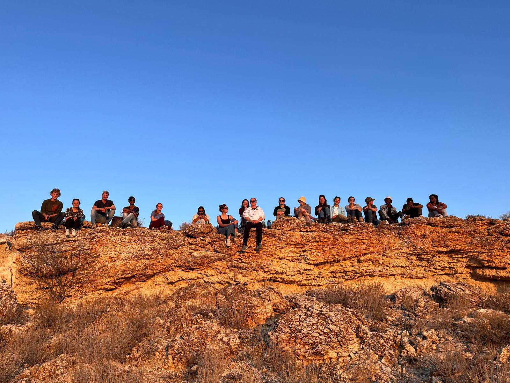
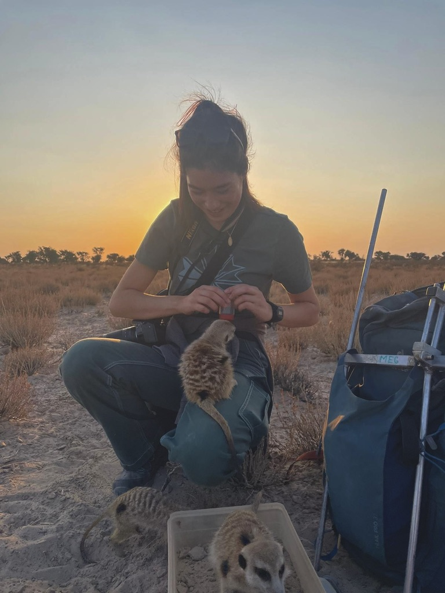
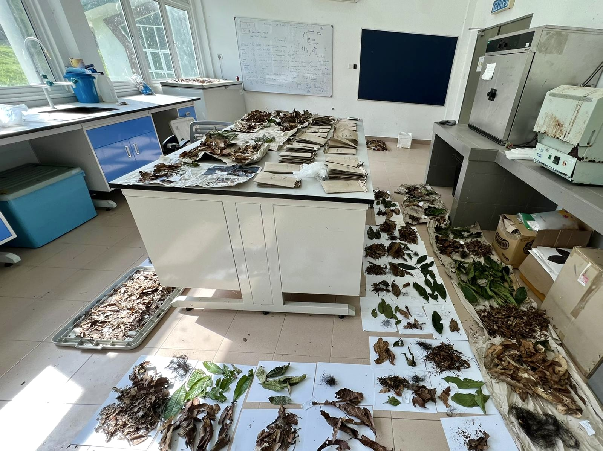
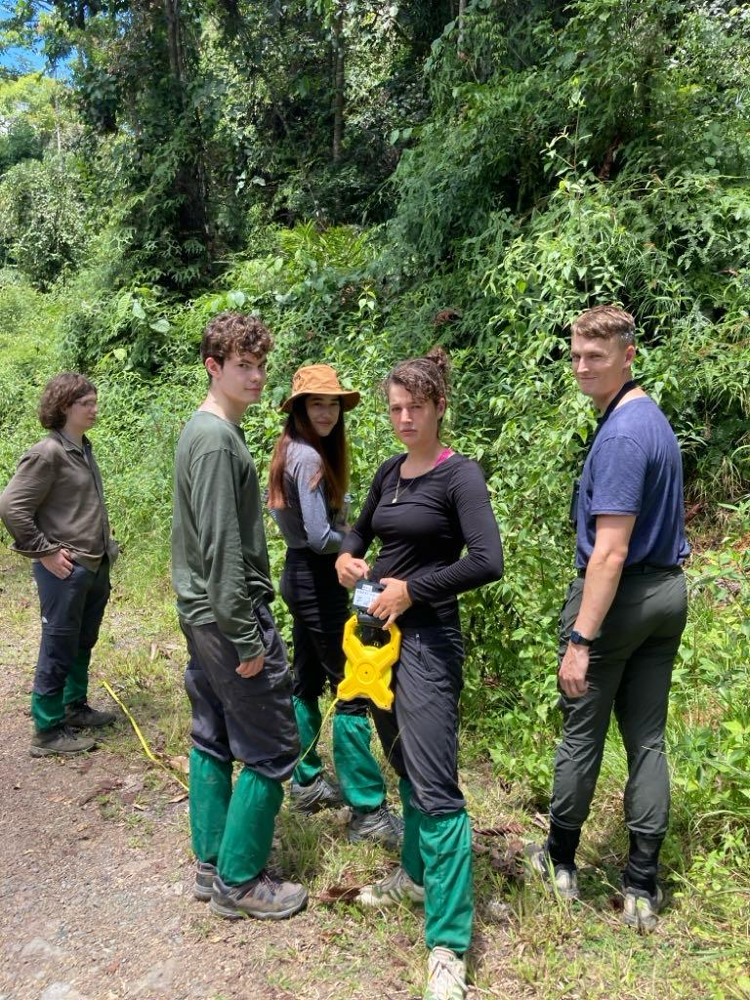

Beyond the lab
My interests outside research span entrepreneurship, sustainability, economics, and travel. I think the best scientists are also curious about the world beyond their field.
Entrepreneurship
Startup advisory — Kiseki Bio
Supported an early-stage synthetic biology startup working on taste perception. Contributed to pre-seed pitch deck preparation and managed international supply chain operations, including sourcing and importing a trial product from Ghana to evaluate UK market viability.
Founder — Daijikun
Founded and ran an e-commerce business importing Japanese consumer goods to the UK market. Managed the full operation independently: import duties and customs compliance, supplier negotiations, inventory management, product photography, website design, and paid advertising. Scaled from zero to a functioning business while completing A-Levels.
Caius Enterprise — Executive Committee
Part of the executive committee for Caius Enterprise, a society that organises entrepreneurship events, speaker series, and networking opportunities for students across the college and university.
Sustainability
Director of Partnerships — Cambridge University Sustainability Society
Lead partnership strategy for UCSS, identifying and initiating collaborations with sustainability-focused organisations, companies, and academic institutions. Established formal collaborations with MIT and UCL, and support a broad programme of events connecting students with researchers, entrepreneurs, and policymakers working on sustainability.
Underutilised crops and food security
I have a longstanding interest in the role of neglected and underutilised crops in building more resilient and sustainable food systems. Crops like teff — which are nutritionally valuable, climate-adapted, and deeply embedded in local food cultures — represent an underleveraged opportunity for both food security and agricultural diversification.
Economics, law & policy
Law
I recently attended a White & Case open day, exploring the intersection of commercial law with areas including life sciences, international trade, and sustainability regulation. I'm drawn to the way legal frameworks shape what science can and cannot do in practice.
Personal finance & investing
I take an active interest in ISA investing and follow equity markets, particularly in sectors adjacent to my research — agri-tech, biotech, and sustainability-linked assets. I enjoy thinking about how capital flows shape scientific priorities.
Economics of science
In my undergraduate review paper on ecosystem health, I deliberately took an economic lens — exploring what it means to assign value to biological concepts and how economic framing changes the way we define and pursue environmental goals. I find the boundary between ecology and economics one of the more interesting places to think.
Travel & field work
Research has taken me to some varied and memorable places. The map below marks locations where I have worked, carried out fieldwork, or spent extended periods of time.

Of Japanese heritage on one side of my family, I have spent many months in Japan across my lifetime — including a period of schooling at a younger age. I continue to return regularly, maintaining strong cultural and familial ties.
Spent three months as a research assistant studying Damaraland mole-rat behaviour and social ecology in the Kalahari Desert, as part of the long-running Kalahari Meerkat Project. Responsibilities included behavioural observation, data collection, blood sampling, and animal husbandry.
Participated in an intensive two-week field course in Sabah, Borneo, focused on tropical forest ecology and photosynthesis. The course involved hands-on fieldwork in primary rainforest, including vegetation surveys and ecophysiological measurements.
Completed a short research internship at the Indian Institute of Science (IISc), Bangalore, working within the Srinivasan group in the Centre for Ecological Sciences. Following the internship, spent time travelling across the country.
My alma mater — I've been here for both my undergrad and PhD, with several years of research internships and placements along the way. My PhD investigates the role of arbuscular mycorrhizal fungi in rice (Oryza sativa), using transcriptomics and metabolomics.
From the field

The field team in South Africa, photographed at the South Africa–Botswana border. The Kalahari Research Centre (KRC) was located within the Kalahari Desert, one of the most beautiful yet remote landscapes I have worked in.

Supporting the meerkat team on one of my days off — a different type of fieldwork involvement.

The lab in Borneo, where we sampled and processed leaves to study aerial leaf-catching fungi. A single day of fieldwork generates a considerable volume of material!

Collecting data in the rainforests of Sabah with my field group, combining plant physiological measurements (photosynthetic parameters) and ecological measurements.